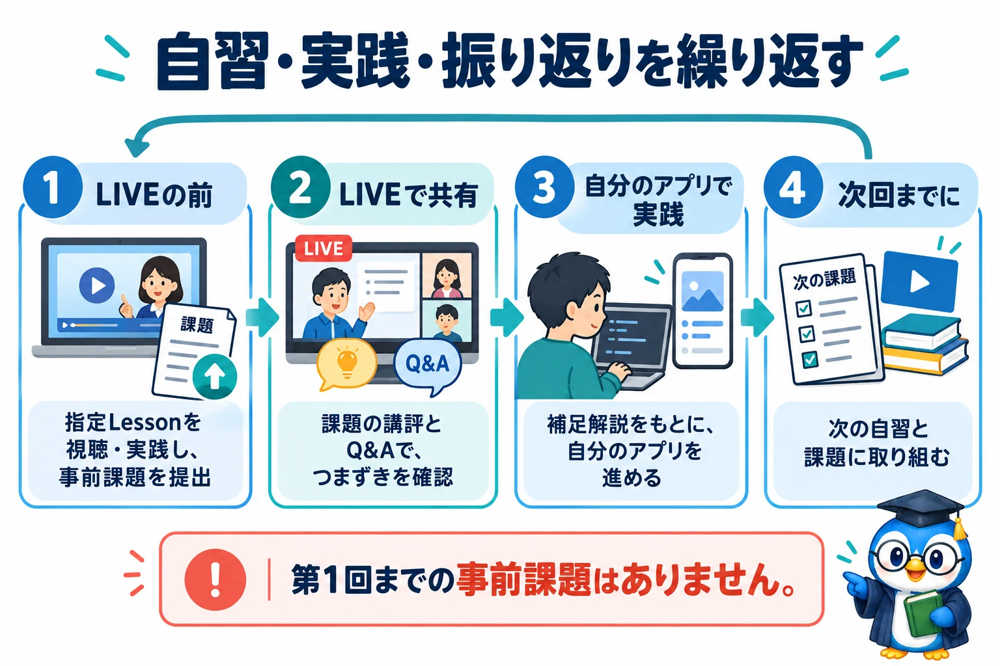
自習・実践・振り返りを繰り返す
- LIVEの前
指定Lessonを視聴・実践し、事前課題を提出
- LIVEで共有
課題の講評とQ&Aで、つまずきを確認
- 自分のアプリで実践
補足解説をもとに、自分のアプリを進める
- 次回までに
次の自習と課題に取り組む
第1回までの事前課題はありません。
図解を画像で開く ↗生成AIアプリ開発ゼミ · VISUAL GUIDE
仕組み・判断・手順をまとめた15点の図解。小さな画面では、読みやすい文字のまま縦に並べます。

自習・実践・振り返りを繰り返す
指定Lessonを視聴・実践し、事前課題を提出
課題の講評とQ&Aで、つまずきを確認
補足解説をもとに、自分のアプリを進める
次の自習と課題に取り組む
第1回までの事前課題はありません。
図解を画像で開く ↗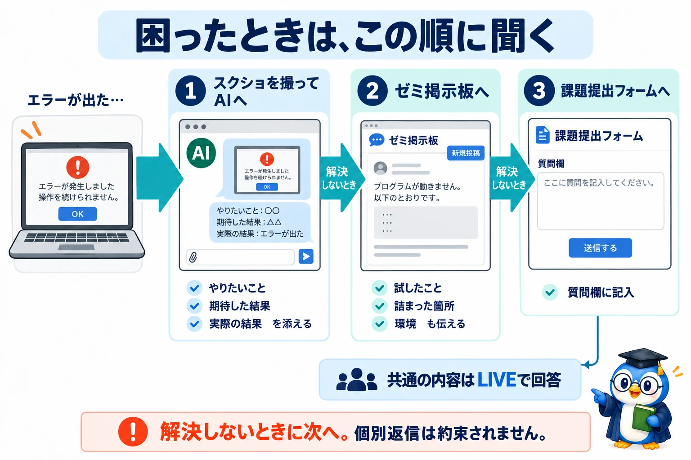
困ったときは、この順に聞く
やりたいこと・期待した結果・実際の結果を添える
試したこと・詰まった箇所・環境も伝える
質問欄に記入。共通の内容はLIVEで回答
解決しないときに次へ。個別返信は約束されません。
図解を画像で開く ↗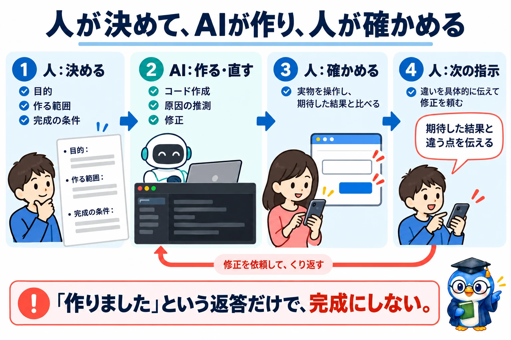
人が決めて、AIが作り、人が確かめる
目的・作る範囲・完成の条件
コード作成、原因の推測、修正
実物を操作し、期待した結果と比べる
違いを具体的に伝えて修正を頼む
「作りました」という返答だけで、完成にしない。
図解を画像で開く ↗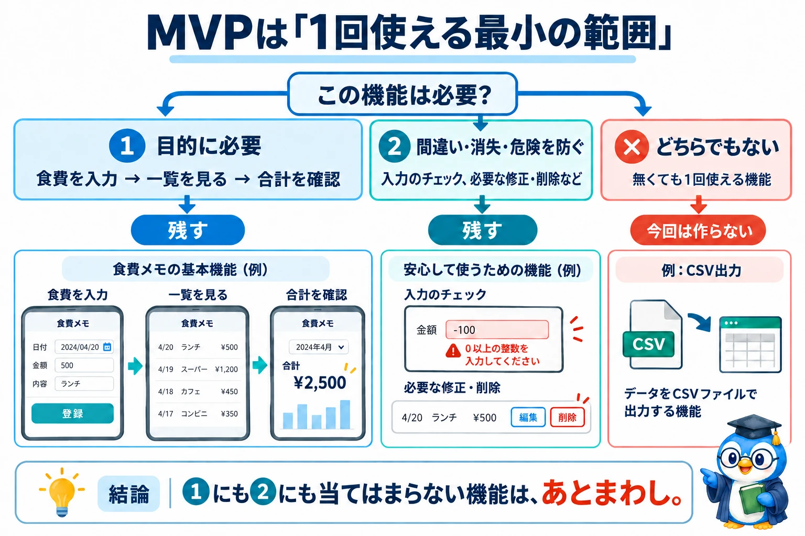
MVPは「1回使える最小の範囲」
食費を入力 → 一覧を見る → 合計を確認
入力のチェック、必要な修正・削除など
無くても1回使える機能。例：CSV出力
①にも②にも当てはまらない機能は、あとまわし。
図解を画像で開く ↗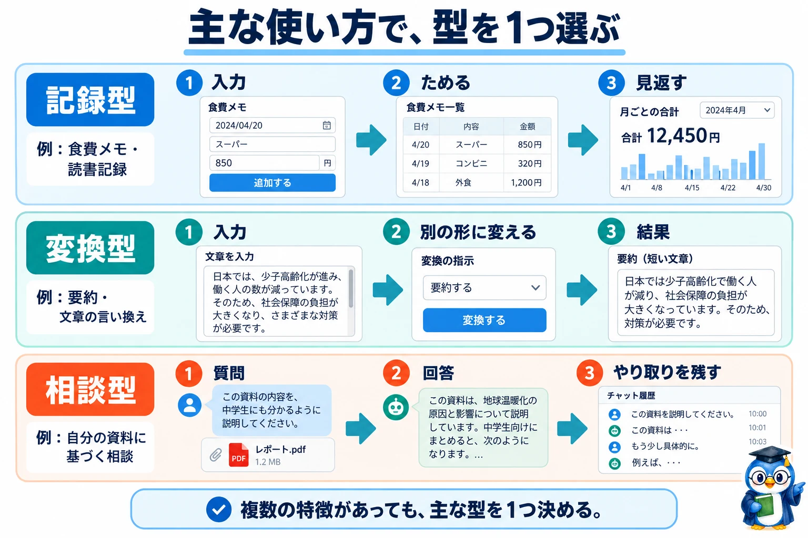
主な使い方で、型を1つ選ぶ
入力 → ためる → 見返す
例：食費メモ・読書記録
入力 → 別の形に変える → 結果
例：要約・文章の言い換え
質問 → 回答 → やり取りを残す
例：自分の資料に基づく相談
複数の特徴があっても、主な型を1つ決める。
図解を画像で開く ↗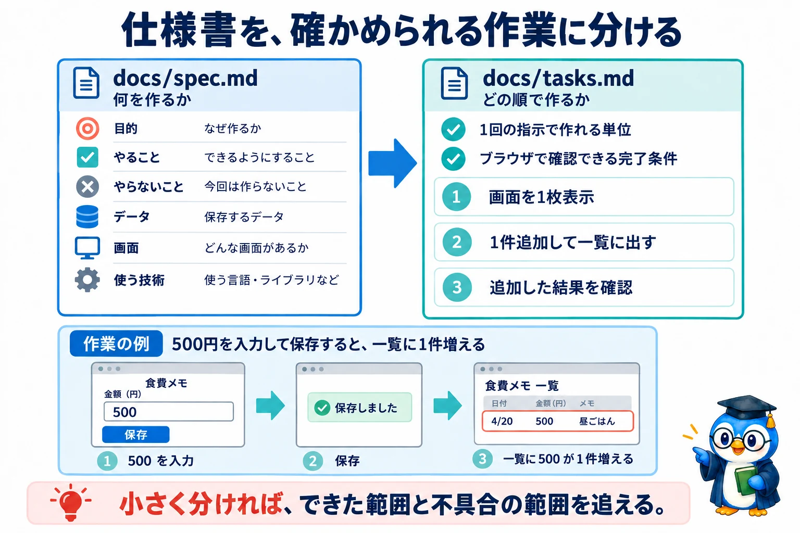
仕様書を、確かめられる作業に分ける
目的／やること／やらないこと／データ／画面／使う技術
1回の指示で作れる単位に分ける
例：500円を入力して保存すると、一覧に1件増える
小さく分ければ、できた範囲と不具合の範囲を追える。
図解を画像で開く ↗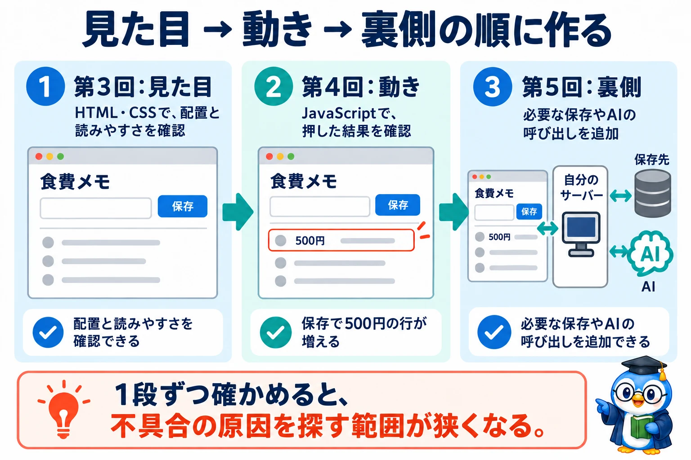
見た目 → 動き → 裏側の順に作る
HTML・CSSで、配置と読みやすさを確認
JavaScriptで、押した結果を確認
必要な保存やAIの呼び出しを追加
1段ずつ確かめると、不具合の原因を探す範囲が狭くなる。
図解を画像で開く ↗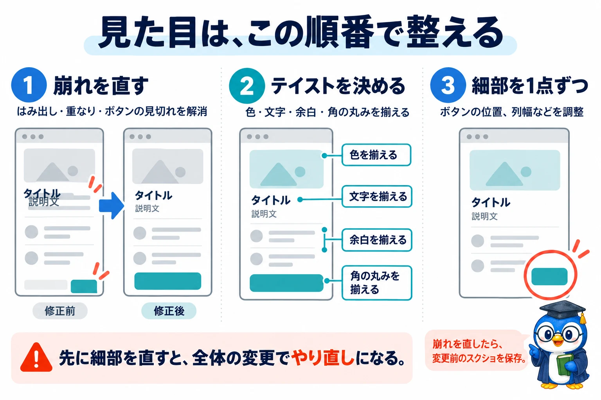
見た目は、この順番で整える
はみ出し・重なり・ボタンの見切れを解消
色・文字・余白・角の丸みを揃える
ボタンの位置、列幅などを調整
崩れを直したら、テイスト変更前のスクリーンショットを保存。
先に細部を直すと、全体の変更でやり直しになる。
図解を画像で開く ↗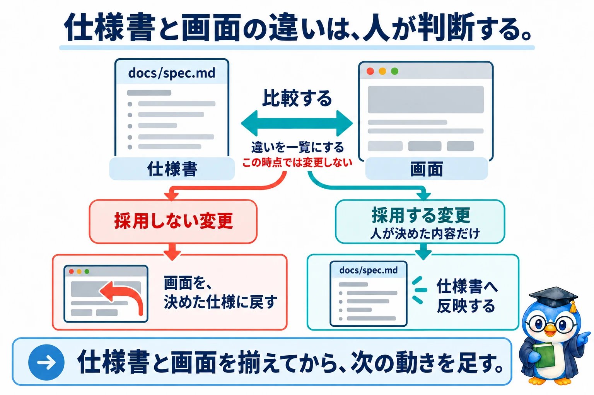
仕様書と画面の違いは、人が判断する
docs/spec.md と画面を比較。まだ変更しない
画面を、決めた仕様に戻す
人が決めた内容だけ仕様書へ反映
仕様書と画面を揃えてから、次の動きを足す。
図解を画像で開く ↗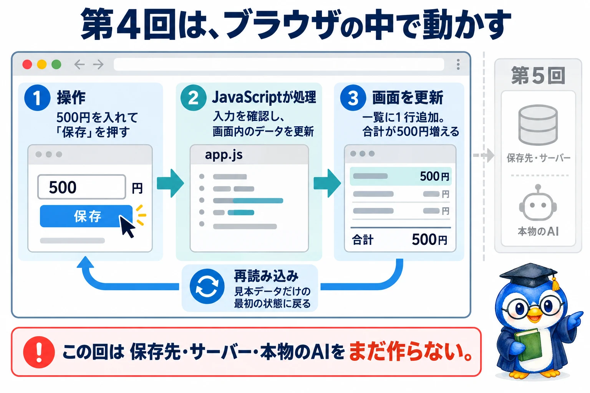
第4回は、ブラウザの中で動かす
500円を入れて「保存」を押す
入力を確認し、画面内のデータを更新
一覧に1行追加。合計が500円増える
見本データだけの最初の状態に戻る
この回は保存先・サーバー・本物のAIをまだ作らない。
図解を画像で開く ↗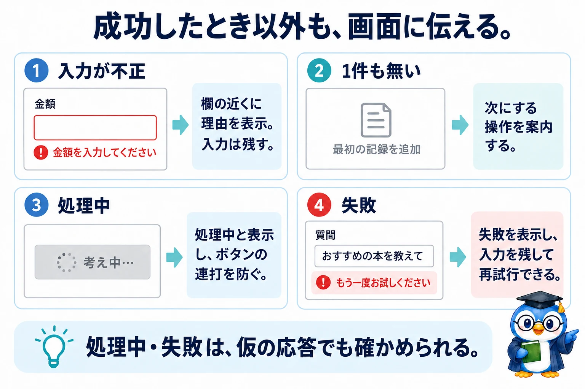
成功したとき以外も、画面に伝える
欄の近くに理由を表示。入力は残す
次にする操作を案内する
処理中と表示し、ボタンの連打を防ぐ
失敗を表示し、入力を残して再試行できる
処理中・失敗は、仮の応答でも確かめられる。
図解を画像で開く ↗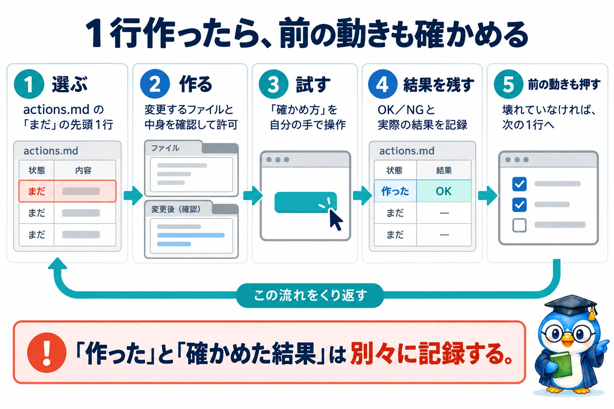
1行作ったら、前の動きも確かめる
actions.md の「まだ」の先頭1行
変更するファイルと中身を確認して許可
「確かめ方」を自分の手で操作
OK／NGと実際の結果を記録
壊れていなければ、次の1行へ
「作った」と「確かめた結果」は別々に記録する。
図解を画像で開く ↗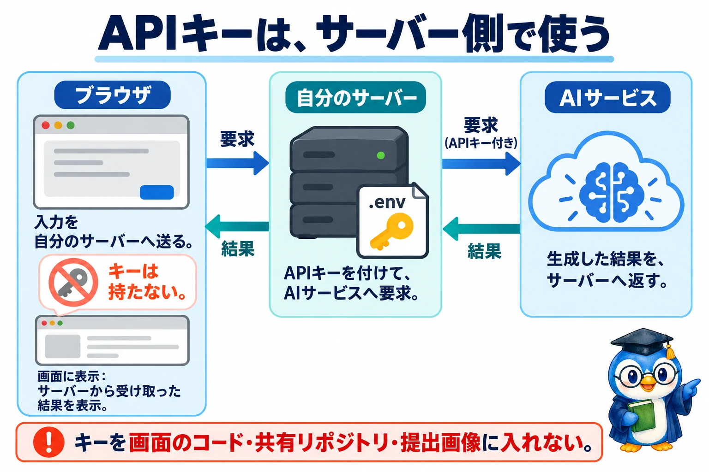
APIキーは、サーバー側で使う
入力を自分のサーバーへ送る。キーは持たない
APIキーを付けて、AIサービスへ要求
生成した結果を、サーバーへ返す
サーバーから受け取った結果を表示
キーを画面のコード・共有リポジトリ・提出画像に入れない。
図解を画像で開く ↗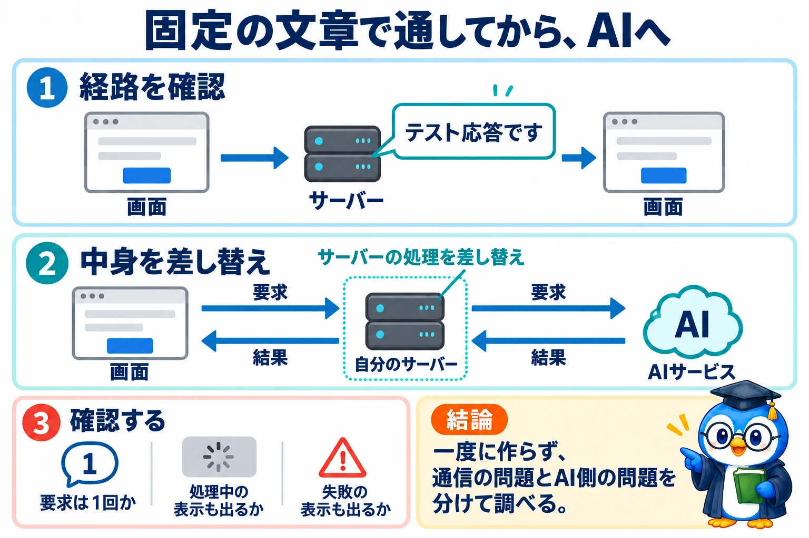
固定の文章で通してから、AIへ
画面 → サーバー →「テスト応答です」→ 画面
画面 → サーバー → AI → サーバー → 画面
要求は1回か、処理中・失敗の表示も出るか
一度に作らず、通信の問題とAI側の問題を分けて調べる。
図解を画像で開く ↗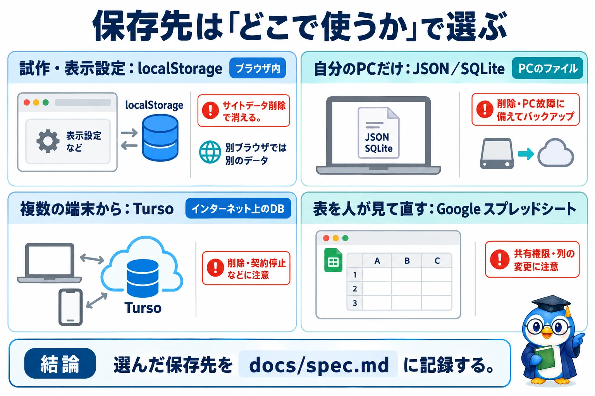
保存先は「どこで使うか」で選ぶ
localStorage：ブラウザ内
サイトデータ削除で消える。別ブラウザでは別のデータ
JSON／SQLite：PCのファイル
削除・PC故障に備えてバックアップ
Turso：インターネット上のDB
削除・契約停止などに注意
Google スプレッドシート
共有権限・列の変更に注意
選んだ保存先を docs/spec.md に記録する。
図解を画像で開く ↗